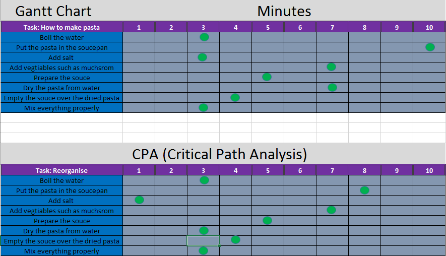
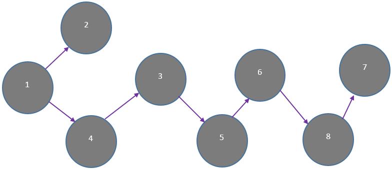
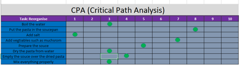

Project Tools
&
Methodologies
Gantt Chart
It's a well-known type of chart that exist to assist project managers across the world with different kind of purposes. The main advantage of this chart is enabling users who take the responsibility of checking the process of tasks to closely observe and manage every stage before starting off the next stage. This would benefit the projects tasks to be properly checked prior going further ahead and facing incompatibility issues within upcoming tasks. The chart does display the time scale to determine visually the duration of each task so project management can set a deadline for client based on the chart given period. The screenshot below shows an example of Gantt Chart I have created with the time and steps taken in order to create pasta.
PERT (Program Evaluation Review Technique)
This chart is another project tool widely used in term of tiding up tasks in the way of organising stages to shrink the given time and reducing cost charges. Therefore, this PERT process comes active when we are dealing with several missions where the main purpose of this chart is breaking down those missions in a way that multiple tasks can be worked on at same time in a secure and organised sequence. Furthermore, it allows us to extend the project in case the client has demands for additional tasks to be included as with this chart we can fit the given task within our working process without effecting the pre-made plan or consuming further time.
Critical Path Analysis (CPA)
It’s one of most commonly project technique used network analysis that assist project managers schedule and plan complicated projects. It identify the required activities and actions that are essential and necessary to complete a certain task. This identification includes the duration to finish each needed activity and the association among all activities, which means it allow project manager to predict when this project or task would be achieved. The CPA technique works by completing the project tasks in a sequence which rely on finishing of some activities before the start of others. For example, once working on producing a new car, we can’t test the performance of the car on harsh street conditions without preparing and installing the required wheels. Therefore, with CPA as project managers we can examine all provided options and tasks to check for the ability of decreasing the time to accomplish the critical steps in a work plan.
Project Lifecycle
Description of the five main phases in Project Lifecycle:
- Defining and producing a specification
- Planning and designing
- Collecting information
- Implementing
- Completing and reviewing
1- Defining and producing a specification
-It’s the information which the project manager should gather from the client regarding to the main aim of the project. This would include a full description where the manager would be familiar to process and create an effective plan to process through the needed stages. This action should be taken prior starting off the project because we are asked to obtain a clear idea about the entire project. As we received useful and meaningful information that would be enough to implement the project we can then develop and design the work down structure.
2- Planning and designing
-The manager responsibility at this stage would be preparing the suitable tools and items which will be used to build the new project where they must be carefully chosen in order to meet and be compatible with the project requirements. An example, considering the internet needs to keep a connection brigade with outside world to reach and resources easily where the manager and project employees can be on continuous communication.
3- Collecting information
-Colours, we aren’t able to apply colours over the form designs based on our preference, we need to ask the client to provide the suitable range of colours that suits the project needs. This is because they have issues with colouring, for instance applying strong and solid rate of colours might be inappropriate for staff with vision and health matters. -Special requirements, prior starting of implementing the project, we need to check whether the client would have special requirements such as compression the size of system files to don’t take much from device storage. -Number of users, determine the people who would use this system, so we can set limited authorisation for certain users who would be able to gain access and use the system. As well as, the number of admins who would be capable to review and modify the overall data and system functions. For example, in our system only three canteen staff members would deal with the new database system. -Software would be used, we need to know the software canteen staff are qualified and trained to use and work on in order to build and execute the database system to run on. Preventing this step might result of incompatibility issues with the current operating system version the canteen machines runs or with the staff ability to work on unfamiliar new software to run the new system.
4- Implementing
-Start developing, the plan has been set appropriately and useful information have been gathered. Therefore, the designer and developers could now start off creating tables in term of programming and applying needs rules and outlook for each entity. This step should be implemented once the previous two phases have been successfully completed and confirmed by the project manager.
5- Completing and reviewing)
The system has been completed and tested fully where it’s the time to hand the new system to the client to get the confirmation. This confirmation would prove that we have meet all client requirements and the project has been successfully reviewed without the need of customising or developing further stuff. It is essential for us to refer back to the original client requirements if the client says that the project doesn’t meet he client needs and as results an additional functionality is needed. Which means as project managers, we should review and check the original requirement the client has asked for once the agreement has been set including his signature. This will assist us in case the client has asked for further functions and features within the database after completing the entire project because adding more functions is out of the agreement we had where he should pay an external price for those improvements.
Project Methodology
Definition
Project methodology is the typical documented path of organising and structuring a project in a suitable manner based on the project type and size. It focus on the combination of associated methods and process which specify the best plan to follow. This plan would be effectively tracked and applied in order to control, develop and distribute a project during the continuous execution progression until successful accomplishment and termination. The main purpose is providing project management the ability to control over the entire process of every stage and phase within the project in order to check and confirm the completion of each phase and apply effective decisions to solve a problem if occurred. This assist the project manager to be familiar of how the project should be deliver according to the budget, duration and specifications which the client of the project has set. Using project methodology will benefit the manager of transferring the project tasks easily between staffs where there won’t be a confusing of passing the irrelevant work to a member of staff which might be the reason of project failure. It simplify the process of maintaining and upgrading certain phrase based on client needs because we can check during the regular communication with client if further action is required prior starting of the new stage.
Why do we use project methodologies?
Managers uses project methodologies frameworks across the world to control and build successful projects regardless to the scale and type of wanted projects. It allow them to handle issues and reduces the risk that might reflect negatively on the overall project progression which means managers can increase the chances of project success as long applying a suitable framework on the project. It increment the motivation and productivity skills in staff members which leads to deliver the accomplished project on time and within the limited budget without exceeding the expectation of donors and project stakeholder.